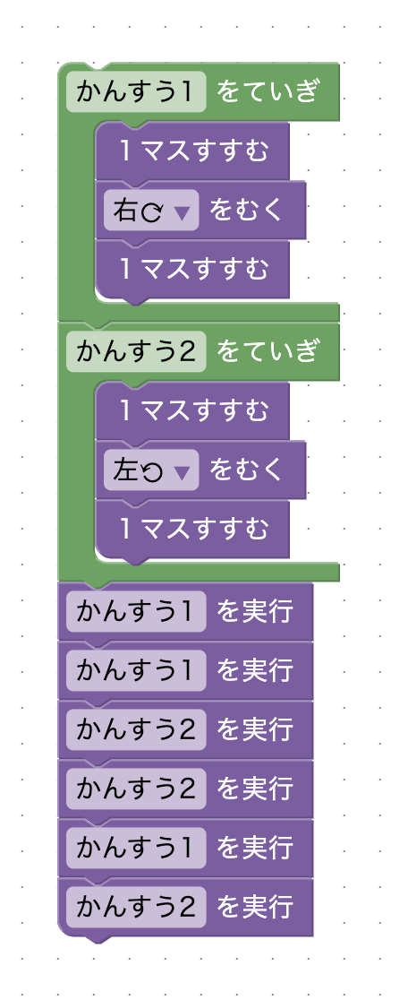
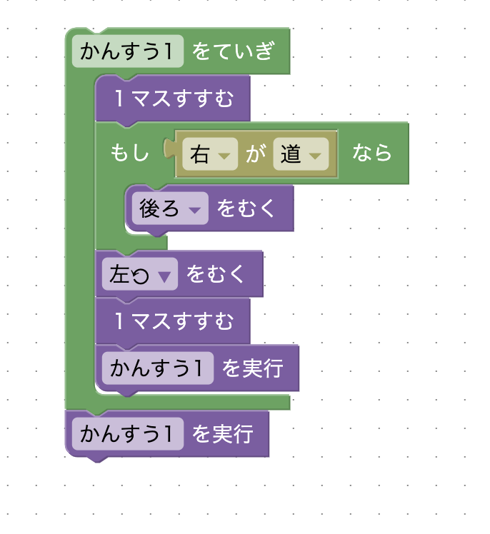

関数を2つ使いましょう！ゴールまでの最短ルートを考えると、2パターンの動きしかしていないことに気づけるかな？プレイヤーを「前、右向く、前、前、右向く、前、前、左向く、前、前、左向く、前...」と動かしたい。
星3を取るには、ステージ8の再帰関数を思い出しましょう。再帰関数を使えば「繰り返し」と同じ動作を実現できます。星2の解法においての、2つの関数の共通点と違いを考えて、一つの関数にまとめてみよう。
次のように、関数を2つ作ってそれを必要に応じて合計6回実行することでクリアすることができます。
プレイヤーを「前、右向く、前 / 前、右向く、前 / 前、左向く、前 / 前、左向く、前 / 前、右向く、前 / 前、左向く、前」と動かしたいので、「前、右向く、前」と「前、左向く、前」の2つの関数を作ります。
再帰関数を使って繰り返しを表現します。星2の解法での2つの関数に共通するのは1回の呼び出しで2マス進むことで、違いは右に曲がるか左に曲がるかです。右に曲がる動作と、左に曲がる動作をどうにか1つの関数に押し込めないでしょうか？
次のようにすると1つの関数にまとめることができます。右を向く動作は、後ろを向いてから左を向くことで実現できます。
